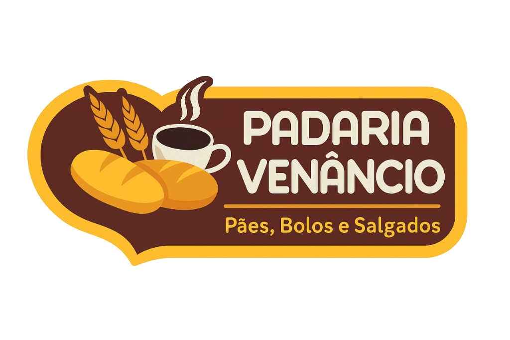

PDV — Padaria Venâncio
Sistema de frente de caixa para Windows
Baixar instalador completo Baixar instalador padrão
Como instalar
O instalador completo já inclui o .NET Framework 4.8 e as atualizações necessárias do Windows 7 SP1. Ele identifica se o Windows é de 32 ou 64 bits e instala os componentes necessários automaticamente.
1
Baixe e abra o instalador completo.
Autorize a instalação com uma conta de administrador do computador.
Autorize a instalação com uma conta de administrador do computador.
2
Aguarde a verificação dos componentes.
A preparação pode levar alguns minutos. O instalador mostra o andamento e avisa se for necessário reiniciar.
A preparação pode levar alguns minutos. O instalador mostra o andamento e avisa se for necessário reiniciar.
3
Se precisar reiniciar, salve seu trabalho.
Depois, entre novamente no Windows com uma conta de administrador para continuar a instalação. Se ela não reabrir, execute o mesmo instalador completo outra vez.
Depois, entre novamente no Windows com uma conta de administrador para continuar a instalação. Se ela não reabrir, execute o mesmo instalador completo outra vez.
Antes de instalar
- Windows 7 SP1, 8.1, 10 ou 11
- Windows 7 sem SP1 e Windows 8.0 não são compatíveis
- Permissão de administrador para instalar os componentes
- Internet para o primeiro acesso à loja e para sincronizar
Padaria Venâncio